DIY Custom IEMs, v2
1. Introduction
This article only covers refinements to the custom IEM process. To see how these custom IEMs are produced in detail, please check out the previous article on v1 of these IEMs.
1. Shell Refinements
To improve the shell fit and comfort, I needed a shell that fit the contours of my ear more exactly and had a smoother finish than the shells on the v1 custom IEMs. In order to do so, I decided to coat the impressions in UV nail gel in order to get a smooth finish without changing their shape in the gelatin too much.
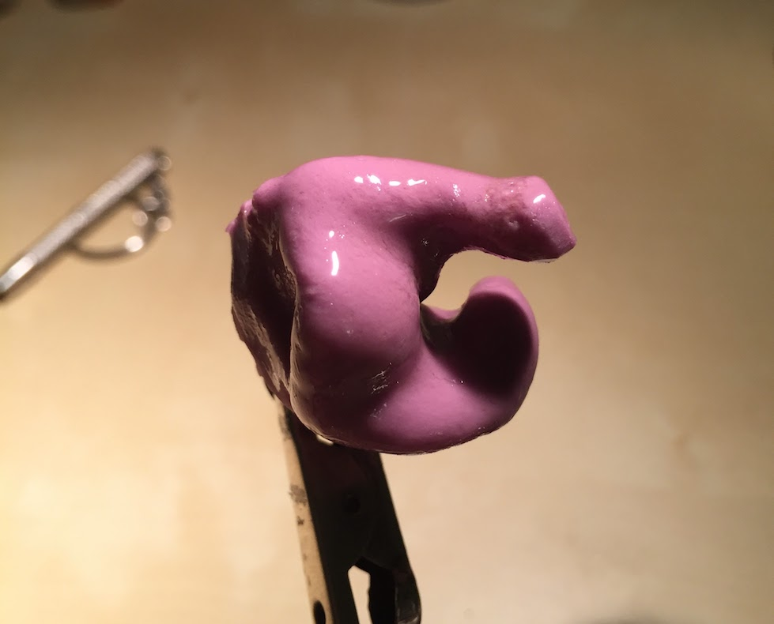This adjustment yielded a much cleaner gelatin mold:
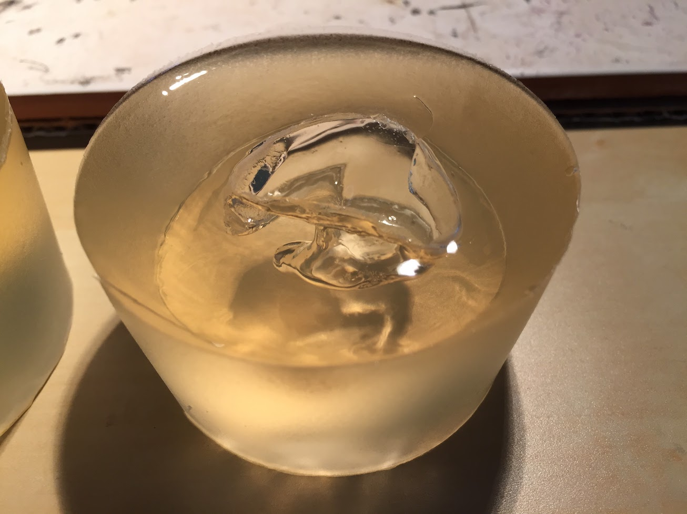Which then yielded cleaner (still not perfect) shells:
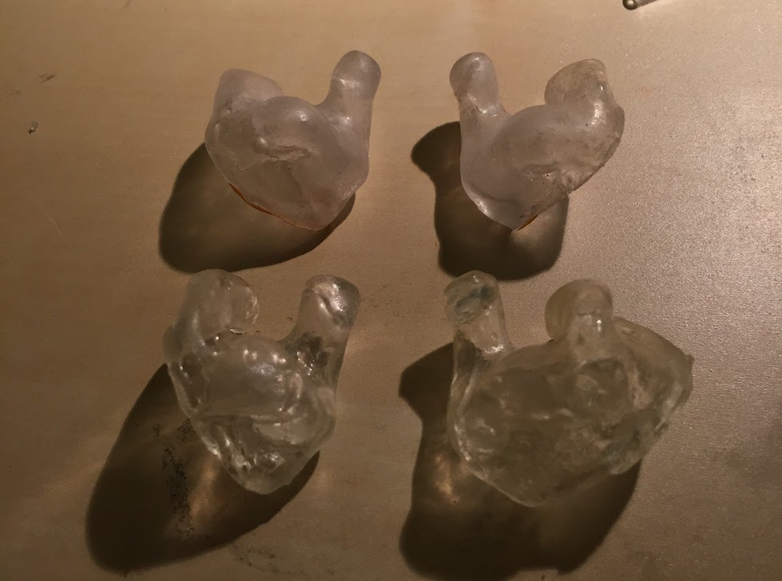To create cleaner shell lids, I used shards of polycarbonate from a previous project and started cutting them into rough shapes.
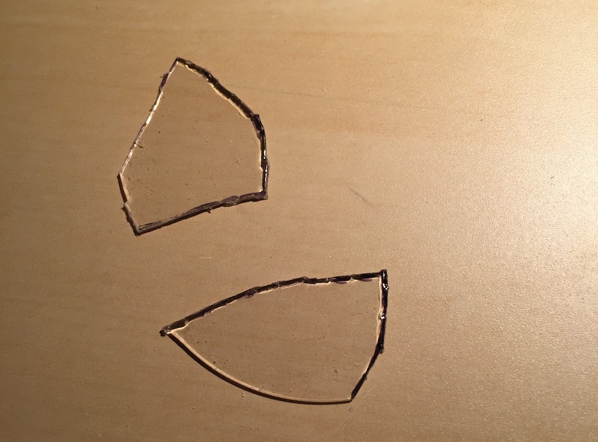They would later be glued onto the shells (with electronics inside), then have their edges sanded down by rotary tool to make a perfect fit.
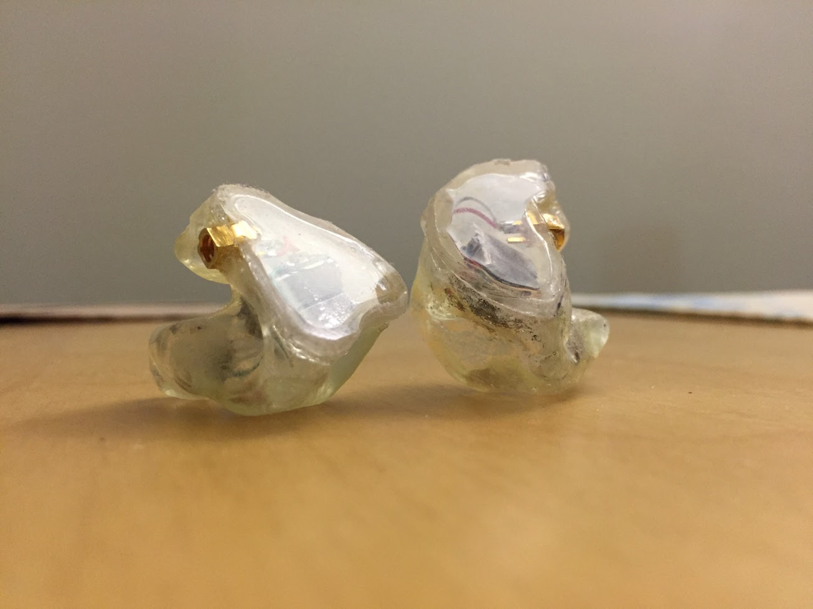In further iterations, I created cleaner lids by simply pouring a puddle of UV nail gel into the UV curing station, then curing the puddle to create a flat and transparent piece of shell material. The flat piece is then glued and sanded onto the shells to create an even more seamless lid.
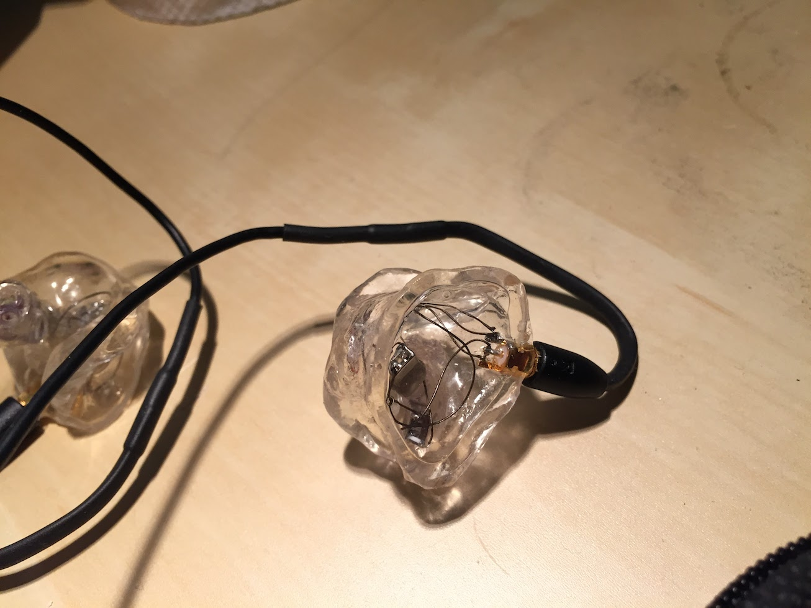2. Electronics Refinements
The most important part of the custom IEM fabrication process is tuning the sound of the IEMs. Because the IEMs are molded to the user, the sound must perfectly match the user's preferences, otherwise the IEMs have little use.
Thus, the electronics within my custom IEMs went through several iterations.

The first version of my IEMs used a Knowles GK-31732 driver with an additional CI-22955 driver soldered to the crossover on the GK. This was an attempt to boost the bass response of the drivers but ended up creating a bloomier bass. Thus, I aimed to wrangle the bass under control with the next revision.
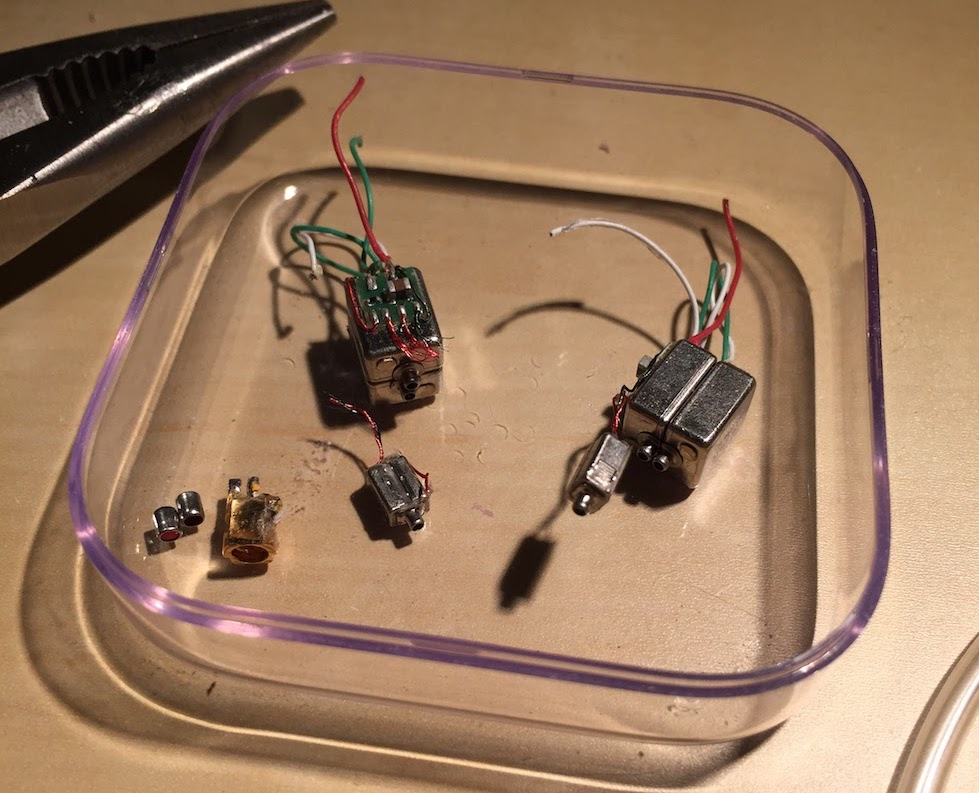The first revision was to try to put the two CI drivers under the same acoustic tubing - allowing both of them to be damped at once and allowing the TWFK on the now-split-apart GK driver to have its own tubing. This should have the combined effect of wrestling the bass response down while allowing the TWFK's treble response to sing.
This first revision had the desired effect, but resulted in a very V-shaped frequency response (boosted bass with hot treble). I desired a flatter, more neutral response so I looked to designing my own crossover circuit to adjust the flow of current to each driver. After several back and forth exchanges with piotrus-g of Custom Art on Head-Fi, he suggested the following crossover:
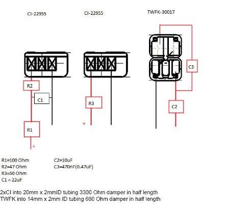Which I proceeded to butcher with this mess of solder and SMD components.
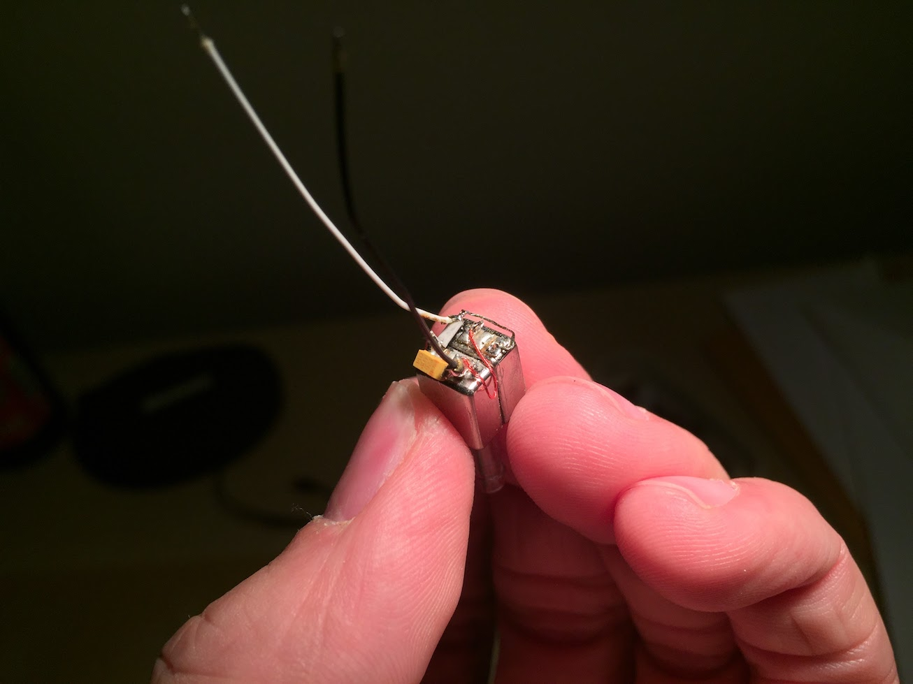 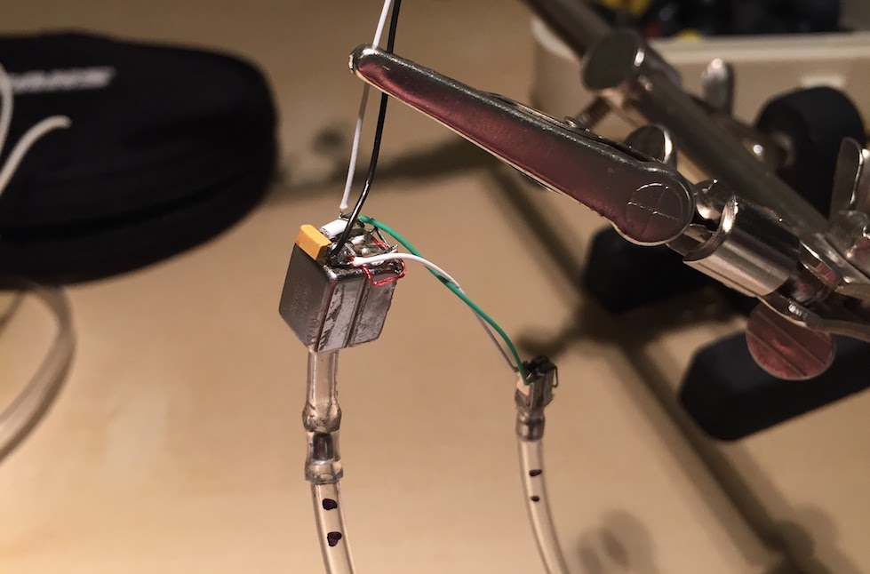 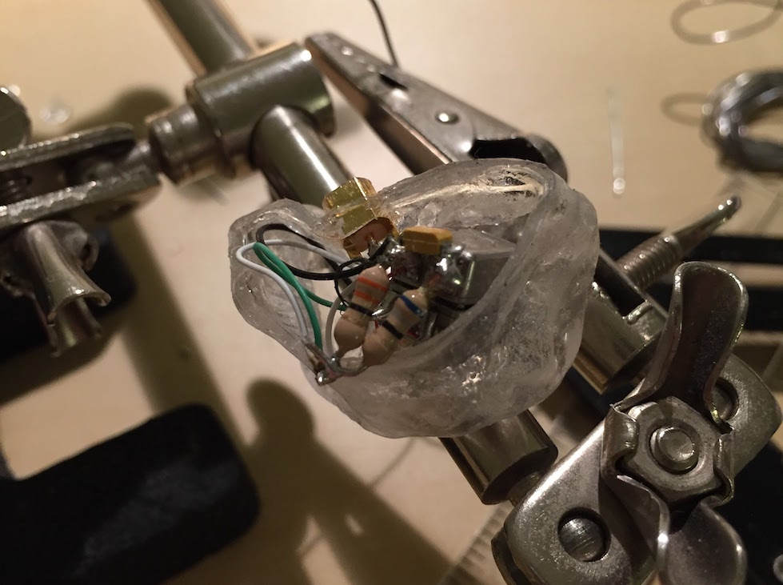As ghastly as it looked, it sounded amazing! Everything had a realistic timbre to it now - snare drums especially sounded much more natural. The soundstage expanded greatly and there was a lot more air. The bass was pulled back, but still had great impact and texture while letting every other part of the spectrum sing - and still being really authoritative when called on. The mids were in perfect balance - not recessed yet still giving the bass and treble room to rumble and shine. (shamelessly taken from my post in Head-Fi)
After using this pair for a while, I came across a user on Head-Fi that had disassembled the well-reviewed and universally praised Noble Savant - revealing only two drivers and a simple crossover. This came as a shock to most of the DIY custom IEM community on Head-Fi and demonstrated how tuning can be much more than adding more drivers and crossovers.
I knew I had to make my own pair.
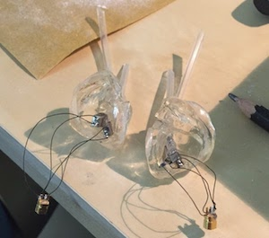Armed with an ED-29689, ED-30761, and the right resistors and dampers, I recreated them. Needless to say, they were amazing and remain my main pair to this day.